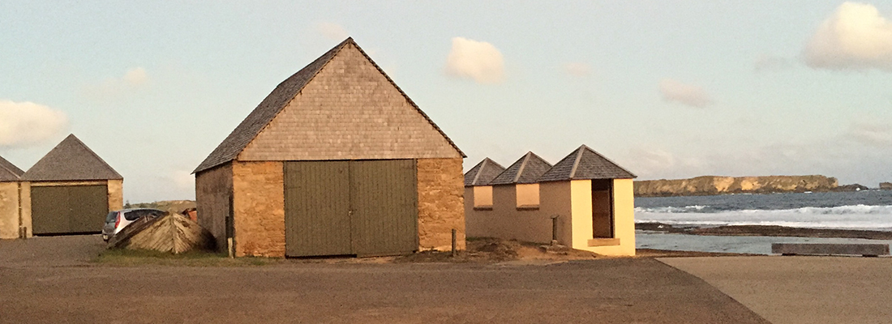

The Pier Store
Locations of KAVHA
When was it built?
The Pier Store was built in 1825 as a commissariat store. It was built as a secure building because food, clothes and uniforms were stored there. Until about 1840 there was a boatshed attached at the western end.
Its uses during the Second Settlement
On 8th May, 1834, the Pier Store (as well as other low lying areas of Kingston) was flooded by a very high tide or tsunami. Because of the damage, the new Commissariat Store was built on Quality Row. At that time the water mill was not able to grind all the grain that was needed so 26 handmills were installed upstairs in the Pier Store. Each of these was operated by two men and men who were unable to do harder work were used on the handmills. The mills only lasted 12 months before they were worn out. The Crankmill then was used for the grinding and the handmills were removed. The top floor of the Pier Store was then used as a guard room so the balcony was installed to give a better view of the area. Downstairs was still used as a store.
Its uses during the Third Settlement
The Pitcairners used the Pier Store as a customs store and part of the upper floor was used as a coffin room.
Its uses today
The Pier Store has been used continuously since it was built in 1825 and became part of the Norfolk Island Museum in 1988. Downstairs you will find the Sirius exhibition. Upstairs is now dedicated to exhibitions about Norfolk Island history since the arrival of the Pitcairners.